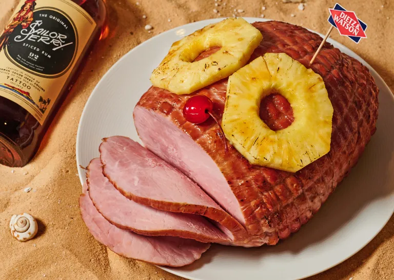

Rum Ham

Description
One large spiral ham soaked overnight in Sailor Jerry's Spiced Rum.
Ingredients
- 1 Dietz & Watson Tiffany Dinner Ham
- 1 handle of Sailor Jerry Spiced Rum
- 1L of pineaple juice
- 100g of salt
- 100g of brown sugar
- Water
Steps
- Add Sailor Jerry Spiced Rum to a large stockpot
- Bring to a boil, add brown sugar and salt, let boil for 3-5 minutes.
- Add ham to the pot and add enough pineapple juice to cover the ham.
- Let simmer for 35 minutes.
- Remove ham and top with pineapple slices and cherry, serve.
Home